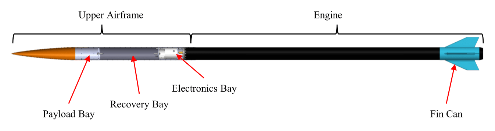
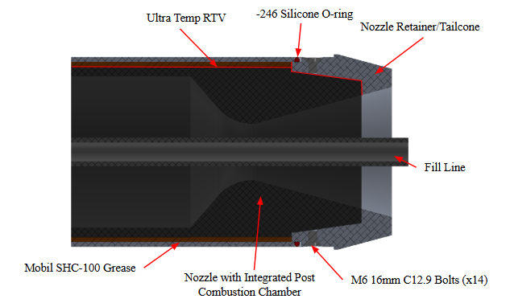
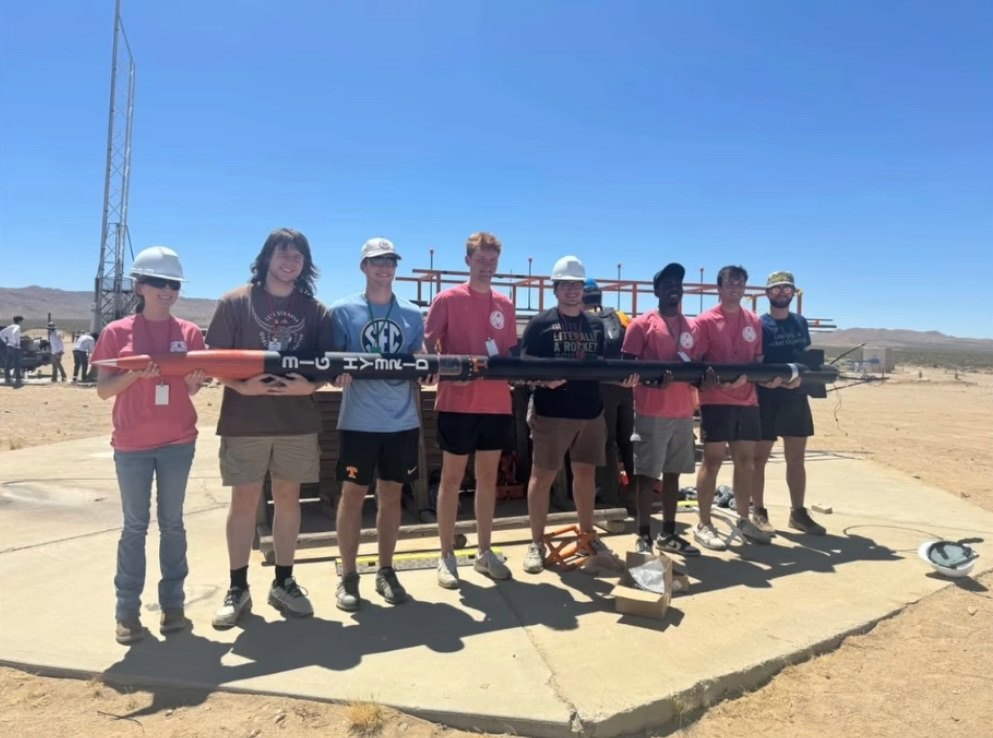
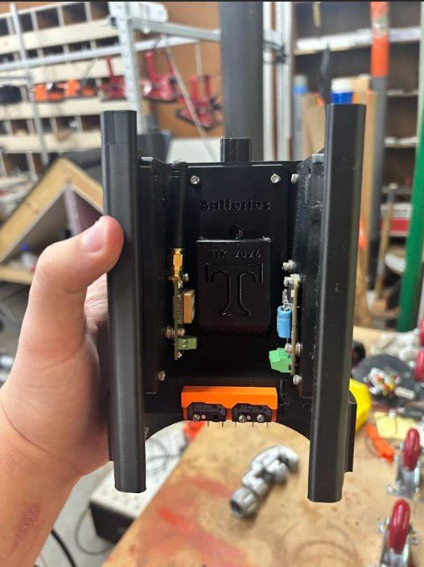
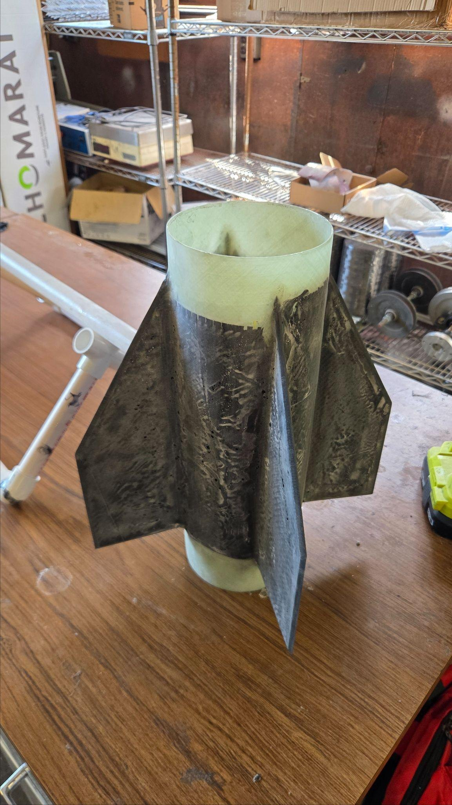

- Role
- Technical Team Lead
- Team
- 13 students, 5 sub-teams
- Timeline
- Aug 2025 – Jun 2026
- Tools
- OpenRocket, SolidWorks, 3D printing
Overview
Built for the FAR-OUT competition in Mojave, California, this hybrid rocket was designed to reach 45,000 feet on about 35,000 N-s of total impulse. As technical lead, I took charge of the 13-person senior design team that inherited it from a previous team, one whose failed test fire had kept them out of the competition.
My role
Much of my work was coordination: planning the rocket's development across five sub-teams and leading through critical moments like test fires and the competition.

The inherited failure
The first job was understanding why the previous team's test fire failed. The culprit turned out to be the gap between the post-combustion chamber and the nozzle, which had led to a burn-through in the aluminum structure. Leading the redesign discussion, I proposed removing that gap altogether by machining the post-combustion chamber and nozzle as one graphite piece.

A failure of our own
About seven months in, our first static fire attempt brought a failure of our own when the oxidizer supply tubing gave way. The likely cause was a scratch in the tube combined with the hot environment, which together created a weak point. With no time to buy higher-quality tubing, we checked the tubing we had for weak spots, replaced the fittings, and kept the oxidizer in the shade. Within a week, the rocket was fully disassembled, reassembled, and back on the test stand.
Results
The nozzle redesign and tubing checks paid off with the rocket's first successful full-duration static fire. Most rewarding was knowing that my team and I had diagnosed both problems and found the fixes behind that result.



What I learned
Leading this team taught me a lot about leadership, and about my own shortcomings as a leader. Under pressure, I could think on my feet and find solutions quickly, but I lacked the technical depth to make effective decisions consistently. Since the project ended, I have been rebuilding my fundamentals by working to understand the underlying physics of fluids and energy that rocketry work demands, so my decisions rest on firmer ground.